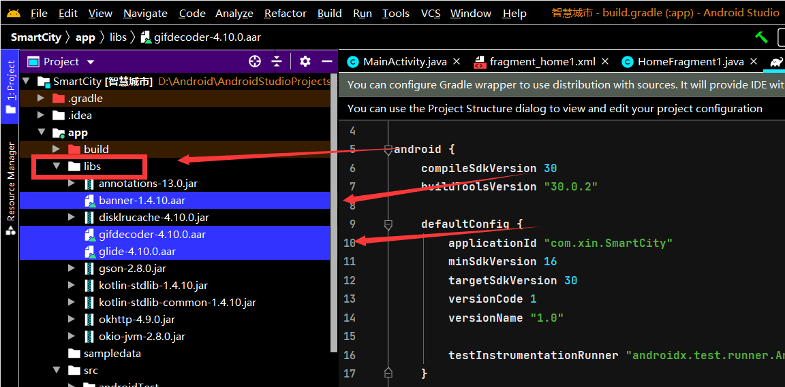
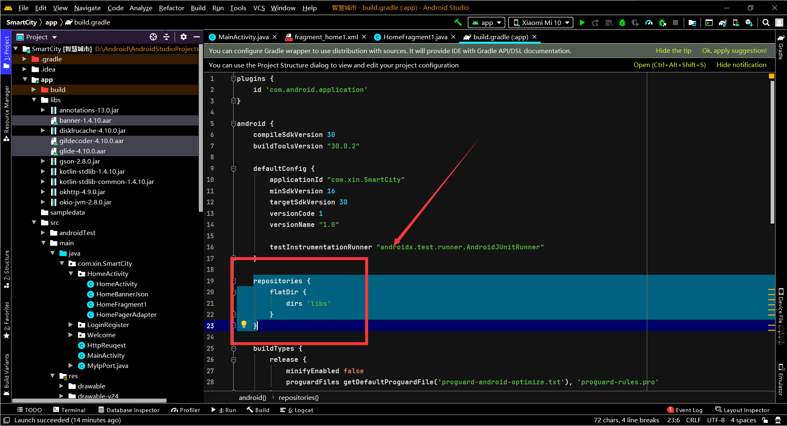
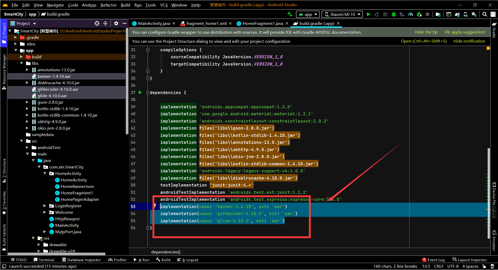
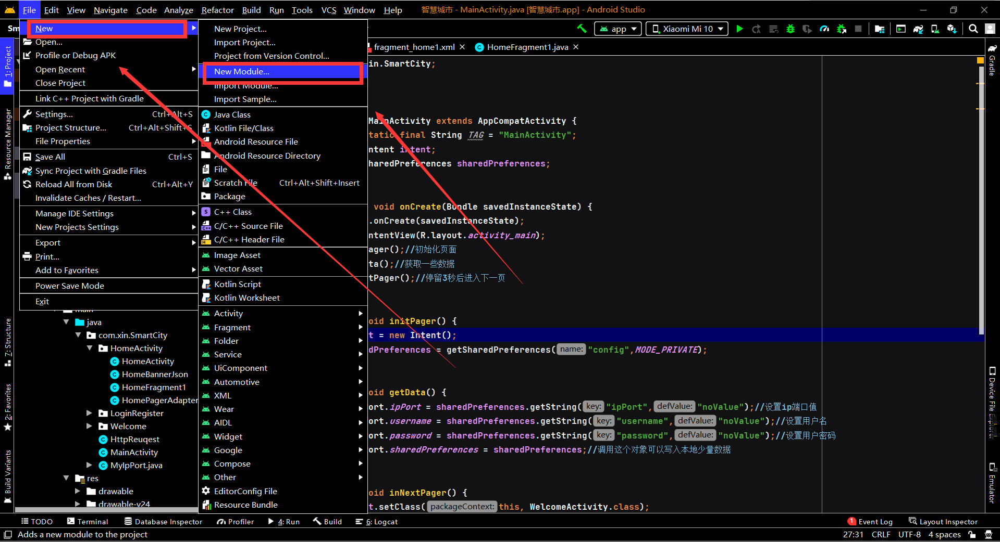
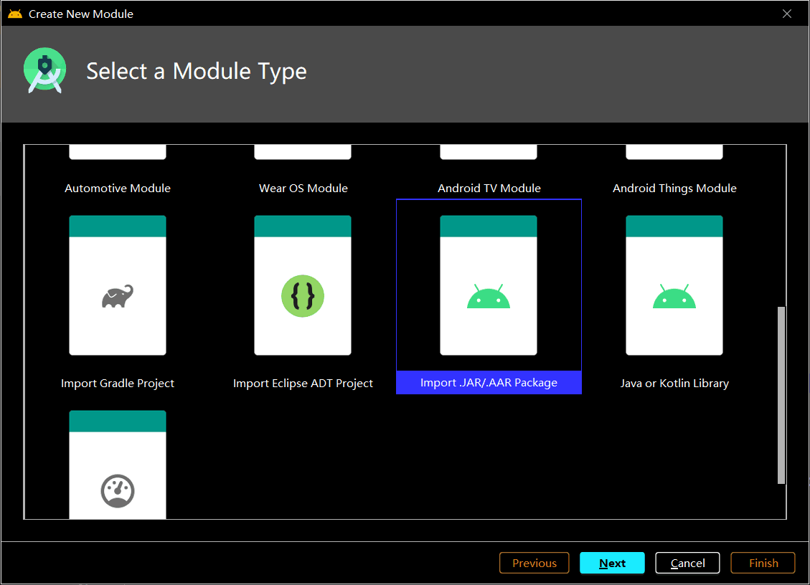
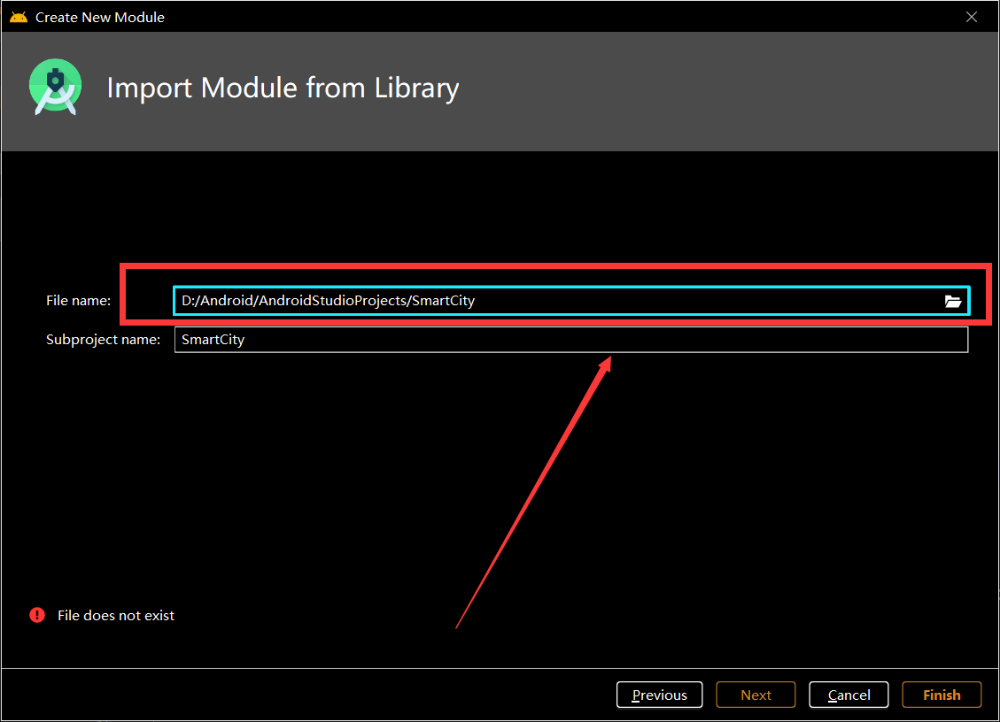

arr引入AndroidStudio
aar是一个类似于jar的文件格式。但是他们之间是有区别的。jar：仅仅包含class和清单文件，没有资源文件。aar：包含了class文件和资源文件。说白了就是Android的专属“jar”
方法一、手动添加依赖
1.在项目的build.gradle文件中加入如下配置，代表添加一个本地仓库，并把libs目录作为仓库的地址
1 | repositories { |

2.把arr文件复制进项目的lib目录中

3.在dependencies中加入aar引用
1 | implementation(name: 'glide-4.10.0', ext: 'aar') |

4.Sync Now，搞定
方法二、从New Module添加
1.File -> New -> New Module

2.选择“Import .JAR/ARR Package”

3.选择arr文件位置finish即可
